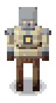
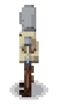
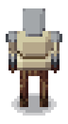

Lode
A Forged the miners dug out on the Low Mountain, with no memory and Varnhalt's forge mark on his chest
Lode: A Forged the miners dug out on the Low Mountain, with no memory and Varnhalt's forge mark on his chest.
History
He travels east to learn what he is. One memory wakes at a time, until he learns that Varnhalt forged him to guard a gate to the Deep
Description
Dug out of the hill mine with no memory and Varnhalt's forge mark on his chest. He was made to guard a gate to the Deep.
Gallery





